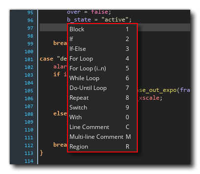

在编辑代码时，你有一个非常方便的工具，就是使用代码片段。当使用script 编辑器时，你可以按 F4 来打开代码片段弹出窗口，它允许你从列表中选择一个常用的代码方法。
在这个窗口中，你可以用鼠标选择要使用的片段，或者你可以按下右边列出的相关热键。这将把该片段添加到你的代码中进行编辑。
如果你想的话，你也可以定义你自己的代码片断。在这样做之前，你需要在以下目录之一创建一个名为 "snippets.txt" 的文件。
这个文件夹在GameMaker的任何更新中都不会 被修改，所以你编辑的文件将保持不变（但对安装目录中的基本片段文件的任何编辑都将被恢复）。
一旦在用户目录下创建了文件，你可以按照这些规则用任何文本编辑器来编辑它。
I - 实例创建。
在冒号之后，你要添加以下代码片段
I - 实例创建：instance_create_layer(x, y, |layer|,object)。
你添加的代码也必须遵循一个特定的格式，其中。
请看已经在基础片段文件中的例子，看看它是如何按照上述规则设置的。你可以在GameMaker安装目录下找到基础文件。
